Temporal data is an especially hard type of data to model as it usually has many kinds of dynamics, both periodic and non periodic in nature. Algorithms such as dense neural networks struggle to grasp all behaviors in temporal sequences as they only consider one element of the sequence at a time and are $``$ blind$"$ to the historic of inputs. This problem could be solved by increasing the complexity of the model by adding more layers and nodes, but this can become very unwieldy. Another way of approaching this problem is to explicitly add an dependence on the previous inputs that the network received. As the state of the network depends recurrently on the previous state, the network models that include this explicit dependence are know as Recurrent Neural Networks (RNN) and are especially suited to deal with sequential data.
Although very powerful, RNNs struggle with temporal sequences with long term dependencies. This limitation is practical as theoretically there is no limit to the length of the correlations learned by RNNs. An variation of this algorithms was thus proposed, the Long Short-Term Memory (LSTM) network, which will be the focus of this text. In this algorithm, both long and short term memories are introduced in an explicit manner which allows the network to generalize very well. LSTM where the most advanced models for sequential data forecasting, but now Transformers are the new bleeding edge (see the excellent talk by Leo Dirac for more details). Nevertheless, LSTMs are still used in many modern real world problems.
The theoretical part of this text is heavily inspired by Colah excellent blog post and Chapter 10 of the Deep Learning Book, providing an intermediate view and hopefully adding further insights where needed. The second part of this post will be dedicated to the implementation of the ideas we have discussed in python using the sklearn library and the $``$Historical Hourly Weather Data 2012-2017$"$ dataset.
| Contents |
|---|
| 1. Introduction |
| 1. Recurrent Neural Networks |
| 2. Long Short Term Memory |
| 3. Implementation |
Many very important time series such as weather forecasting, stock price prediction and pandemic spread are very hard to describe analytically, and making better predictions in these cases could have a major impact in society. One of the most obvious candidates for a model is Dense Neural Networks as they are famous for dealing with complex systems and generalize very well. Although they can be used to fit a time series, there are some shortcomings. Lets start our discussion considering a common, fully connected, neural network:
This network only receives one input at a time and the previous events don't affect the current result in any direct way. Indeed, at step $t$ the state $h_t$ of a neuron in the hidden layer can be written as: $$\hspace{2cm}h_t = f( \vec{w}_t . \vec{x}_t), \hspace{2cm}(1)$$ where $\vec{w}_t$ are weights (bias is omitted for simplicity) and $f$ a generic activation function. This model will learn the correlations in a very non linear way during training and can be very sensitive on the way the data is presented to it. There is also the problem that, in some cases, there is no way of obtaining many observations to train the model as data is very scarce (e.g. Population growth in a country is only measured a few times in a year and has a somewhat limited historic). These $``$limitations$"$ can be addressed by simply increasing the overall complexity of the network or performing a fancy statistical analysis on the data, but we will discuss one way we can modify the algorithm by including an explicit memory term.
One way we can try to solve the problems discussed in the previous session is by introducing an explicit dependence on the past state of the neuron: $$ h_t = f(\vec{w}_t . \vec{x}_t + \vec{u}_t . \vec{h}_{t-1}), $$ where $\vec{u}_t$ is a new set of parameters that control how much of the past information (or "memory") is used. This transforms equation $(1)$ into a recurrence relation as $h_t$ now depends on $h_{t-1}$. This is one of the ideas that inspired the formulation of Recurrent Neural Networks (RNN) (not to be confused with Recursive neural nets that share the same acronym and sound similar, but have differences). As the hidden units use their own past output to proceed, the same parameters are used over and over again. This parameter sharing can be loosely interpreted as the network keeping what it has already leaned previously and is one of the reasons why RNN are best suited for sequential data. The structure of a RNN can be illustrated as:
The representation on the right is know as the unfolded computational graph of a RNN, which is just a fancy name for expanding a recurrence relation. The unfolded network can be seen as just a sequence of copies of a single layer, applied over the entire sequence of $x$. This is the general structure of a RNN but there are many variants to this scheme. While explaining all of them is far beyond the scope of this text, you can read more about then here if you are interested.
While there is no theoretical limit to the memory of a RNN, practice shows that its hard to learn long term dependencies (see Bengio et al) as their effects are heavily "diluted" as the recurrence is iterated. This comes from the recurrence itself as the network is as deep as the length of the sequence, and thus the same weights are used several times. If we were dealing, for example, with a time series of 100 steps the recurrence will apply the same weights $100$ times, thus the final state $h_{100}$ will depend on the weight matrix $ W^{100} $. The gradients (used in gradient descent) linked to eigenvalues slightly different than $1$ will either vanish or explode, thus making training a hard task. LSTM is one popular RNN model that tackles this problem and is specially built to deal with both long and short term dependencies.
LSTM addresses the problem of long term memory by making several modifications to the vanilla RNN architecture. Indeed its structure is far more complex (adapted from here):
The idea is to add a $``$cell state$"$ that stores memory throughout the network. This cell state is only affected by some minor linear iterations and is responsible for carrying part of the memory of the network forward. We also add terms for both short memory and long memory in the hidden state: $$h_t = (``Short\ memory") \times (``Long\ memory") \equiv S_t . L_t,$$
The short memory term $S_t$ will only combine the current input with the very last state of the cell. This short memory will be learned via a usual neural net layer with a $\sigma$ activation function. $$S_t = \sigma ( w_s [h_{t-1}, x_t] + b_s ),$$ where $w_s$ and $b_s$ are the weights and bias of this layer.The $[,]$ is the concatenation operator. The long memory term $L_t$ will be responsible of carrying the memory of the cell, forgetting any currently held information (old information") and adding new information based on the current input and state. We can think of it like:
$$ \begin{eqnarray*} L_t &=& (``Forget\ rate") . (``Old\ information") + (``Acceptance\ rate") . (``New\ information")\\ \, &\equiv& f_t L_{t-1} + a_t \tilde{L}_{t-1}. \end{eqnarray*}$$
The old information is the last value of the memory which is equivalent to $L_{t-1}$. Both the "forget rate" $f_t$ , "acceptance rate" $a_t$ and "new information" $\tilde{L}_t$ must be learned. This is done via a usual neural net layers: $$\begin{eqnarray*} f_t &=& \sigma ( w_f . [h_{t-1}, x_t] + b_f ),\\ a_t &=& \sigma ( w_a . [h_{t-1}, x_t] + b_a ),\\ \tilde{L}_t &=& \tanh ( w_l . [h_{t-1}, x_t] + b_l ),\\ \end{eqnarray*}$$ where all the $w$ are separate sets of weights and $b$ the biases that need to be learned. In order to "smoothly normalize" the long memory term (as it can exceed unity as its is the sum of two things that can be at maximum 1) the LSTM model applies a $tanh$ to it. This leads us to the final form of the state of the LSTM cell: $$\boxed{h_t = S_t \tanh(L_t)}.$$
Further modifications can be made to this scheme such as adding peepholes or adding the s called $``$update gates$"$. These variations are explained in Colah's post in great detail and I highly recommend you check it out. Now we will focus on how we can use LSTM in python.